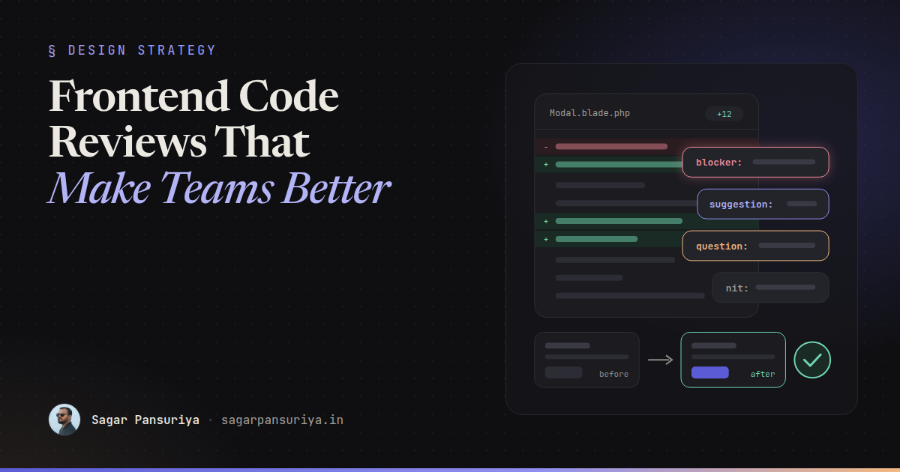
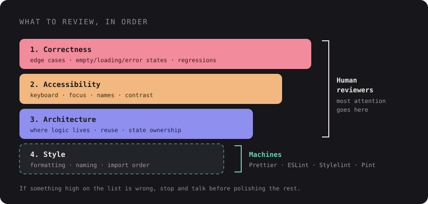

Frontend Code Reviews That Actually Make Your Team Better


You've probably been on both ends of a bad review. On one end: a pull request comes back with 34 comments, 30 of them about quote style and import order, and the one that mattered (the modal can't be closed with the keyboard) is buried somewhere in the middle. On the other end: a big PR gets a single "LGTM" ten minutes after it was opened, and the bug ships on Friday.
Code review is the most frequent teaching moment a team has. Every developer on a team gets reviewed several times a week. If those reviews are noisy, unclear or harsh, people learn to dread them. If they're focused and kind, people get better every week without anyone scheduling a training session.
After a decade of leading frontend teams, this is the approach I keep coming back to: what to look at first, how to label comments so authors know what's required, what to hand over to machines, and how to review the parts of frontend work that don't show up well in a diff.
Review in priority order
Not every comment is equally important, and reviewers who treat them equally produce reviews nobody can act on. I review in this order, and I stop to talk to the author if something high on the list is wrong, because there's no point polishing names in code that needs a different approach.

- Correctness. Does it do what the ticket says? Edge cases: empty states, loading states, errors, long strings, zero items, a thousand items. Does it break anything nearby? For Livewire and Alpine code, does state survive a re-render? For React, are effects and dependencies right?
- Accessibility. Can you use it with a keyboard alone? Do interactive elements have accessible names? Is focus managed when a dialog opens and closes? Is there enough colour contrast? I put this second on purpose. It's part of correctness for real users, and it's far cheaper to catch in review than after an audit.
- Architecture. Is the logic in the right place? Is this a new component that duplicates an existing one? Will the next developer understand where to make a change? Is state owned by one place?
- Style and readability. Naming, small simplifications, consistency with the rest of the codebase. Useful, but last, and most of it shouldn't be done by humans at all.
Label every comment
The most useful habit a team can adopt is prefixing each review comment with a label that says how much it matters. It removes the guessing game ("do they want me to change this or are they just musing?") and makes it easy to see at a glance whether a PR is close to done. This is the idea behind the Conventional Comments format; the four labels below cover most of what a team needs:
| Label | Meaning | Blocks merge? |
|---|---|---|
blocker: | A bug, accessibility failure or security issue. Must be fixed. | Yes |
suggestion: | A better approach, with a reason. Author decides. | No |
question: | I don't understand something. Explain, or add a comment in the code. | Until answered |
nit: | Tiny, personal or cosmetic. Ignore freely. | No |
A few examples of the difference a label makes:
blocker: The close button is a <div> with @click, so keyboard users can't
reach it. Could this be a <button type="button"> with aria-label="Close"?
suggestion: This filter logic is duplicated in ProductList and SearchResults.
Pulling it into a shared Alpine.data('filters') would keep them in sync.
Happy to leave it for a follow-up if you'd rather ship this first.
question: Why is the debounce 1000ms here? It feels slow when I type,
but maybe there's an API limit I don't know about.
nit: I'd call this isOpen rather than open, but not a big deal.Notice what the good ones share: they say why, they offer a way forward, and they're phrased
about the code, not the person. A question: is often the most powerful label of all, because
half the time the answer is "good point, I'll change it", and the author arrived there themselves.
Automate the boring parts
If a human is commenting on indentation, semicolons, quote style or import order, your tooling has failed, not your developer. Every one of those comments costs attention that should have gone to correctness and accessibility. The fix is to make formatting and linting automatic and non-negotiable.
- Prettier for formatting JavaScript, TypeScript, CSS, JSON and Markdown. There are community plugins for Blade and for Tailwind class ordering if you want them.
- ESLint for JavaScript and TypeScript correctness rules: unused variables, hook rules
in React, accidental globals. Add an accessibility plugin (for React,
eslint-plugin-jsx-a11y) to catch the obvious issues before review. - Stylelint for CSS: invalid properties, duplicate selectors, and team conventions
like disallowing
!importantor IDs as selectors. - Laravel Pint for PHP formatting, which also covers Livewire components and other PHP classes.
Run them in two places: locally before commit (with a pre-commit hook such as husky and
lint-staged, so only changed files are checked), and in CI so nothing unformatted can be
merged. A minimal CI step looks like this:
# .github/workflows/lint.yml (excerpt)
- run: npm ci
- run: npx prettier --check .
- run: npx eslint .
- run: npx stylelint "resources/**/*.css"
- run: composer install --no-interaction
- run: ./vendor/bin/pint --testOnce this is in place, add one team rule: no human comments about anything a tool could enforce. If you keep wanting to leave the same style comment, turn it into a lint rule instead.
Keep pull requests small
Review quality drops sharply with PR size. A 150-line PR gets read carefully. A 1,500-line PR gets skimmed and approved, because nobody has two uninterrupted hours. My rough guidelines:
- Aim for PRs a reviewer can finish in one sitting, roughly under 400 changed lines of real code (generated files and lock files don't count).
- Separate refactors from behaviour changes. "Rename and move" in one PR, "add the feature" in the next. Mixed PRs hide real changes in the noise.
- Ship big features behind a flag in several PRs instead of one branch that lives for three weeks.
- Write a description that says what changed, why, and how to test it. Two sentences is often enough.
Review the UI, not just the diff
Frontend changes are visual, and a diff of CSS or Tailwind classes tells you very little about what the
user sees. Swapping gap-4 for gap-6 looks harmless in a diff and might push a
button off screen on a small phone.
- Require screenshots for any visual change. Before and after, at mobile and desktop widths, and in dark mode if you support it. Put the requirement in your PR template so nobody has to ask.
- Use preview deployments if your hosting supports them, so reviewers can click through the real thing instead of imagining it.
- Check states, not just the happy path. Ask for, or check yourself: loading, empty, error, very long content, and keyboard focus styles.
- Review CSS for side effects. Is a new global selector going to leak into other
pages? Is a magic number (
top: 37px) hiding a layout problem? Are new colours using the design tokens or hard-coded values?
A short screen recording is even better than screenshots for interactions such as dropdowns, transitions and drag and drop. It takes a minute to record and saves a reviewer from pulling the branch.
The tone of good feedback
Tone is where reviews either build a team or wear it down. A few rules I try to follow and ask my teams to follow:
- Talk about the code, not the author. "This function does two things" instead of "you made this too complicated".
- Ask before you assert. "What happens if the list is empty?" teaches more than "this breaks on empty lists", and it leaves room for the author to know something you don't.
- Explain the why, or link to it. A comment that cites the reason (an MDN page, a WCAG criterion, a decision in your docs) teaches a principle, not just a fix.
- Point out good work. A genuine "nice, this is much clearer than before" costs nothing and tells people which habits to keep.
- Move long threads to a call. After two rounds of back-and-forth on the same point, talk for five minutes, then summarise the outcome in the PR.
- Review promptly. A PR waiting two days is a context switch for the author and an invitation to pile more changes into the same branch. Aim to give a first pass within a working day.
The goal of a review isn't to prove you're the smartest person in the thread. It's to leave the code, and the person who wrote it, a little better than before.
A copy-paste PR checklist
Drop this into .github/pull_request_template.md (GitHub picks it up automatically for new
pull requests) and adjust it to your stack:
## What and why
<!-- One or two sentences. Link the ticket. -->
## How to test
<!-- Steps a reviewer can follow. -->
## Screenshots
<!-- Before / after. Mobile + desktop. Dark mode if relevant. -->
## Checklist
- [ ] Does what the ticket asks, including empty, loading and error states
- [ ] Works with keyboard only; focus is visible and managed in dialogs
- [ ] Interactive elements are real buttons/links with accessible names
- [ ] Colour contrast checked; uses design tokens, no hard-coded colours
- [ ] Tested at mobile and desktop widths
- [ ] No new global CSS that could leak into other pages
- [ ] Prettier, ESLint, Stylelint and Pint pass locally
- [ ] Tests added or updated for new behaviour
- [ ] PR is focused: no unrelated refactors mixed inThe takeaway
Good frontend reviews come down to a handful of habits: review correctness and accessibility before anything else, label every comment so the author knows what's required, let tools handle formatting, keep PRs small enough to read properly, look at the actual UI, and write every comment as if you're helping a colleague, because you are. Do that consistently and review stops being a gate people push through. It becomes the place your team gets better, one pull request at a time.
Discussion